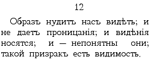
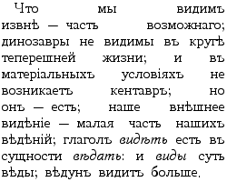
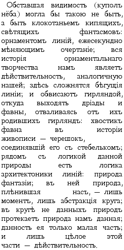
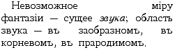

Glossolalia (Section 12)

The image compels us to view it; and does not give penetration; and the visions are carried along; and they are -- incomprehensible; the visible world is just such an illusion.

What we view on the outside is -- a portion of the possible; dinosaurs are not visible in the circle of our present life; and in material conditions a centaur does not arise; but it -- exists; our external vision is -- a small portion of our wisdoms; the Russian verb "view" [videt'] is in essence "to be wise, to know" [vedat']; and visions are wisdoms: a wizard has superior vision.

The surrounding visible world (the cupola of the palate) might have been otherwise, it could have been a gurgling of boiling, gleaming phantasms: a decorative ornament of lines, changing its outline every second; the entire history of decorative art is in actuality analogous to our own; here running lines converge; and they hang in garlands, from which emerge dryads and fauns, pushed away from the garlands which generated them; the tail of Faunus in the history of art is -- a leafstalk uniting him to the stalk; alongside the logic of this given nature there is a logic of the architectonics of the line: the nature of phantasy; in it nature, which has captivated us, is -- barely a moment, it is just an abstraction of the circle; in the circle of natures not given our own given nature flows through to us; what is given is only a small portion; and the whole of this part is -- actuality.

What is impossible for the world of phantasy is -- the essence of sound; the realm of sound is -- in the trans-imagal, in the root, in the primogenital.